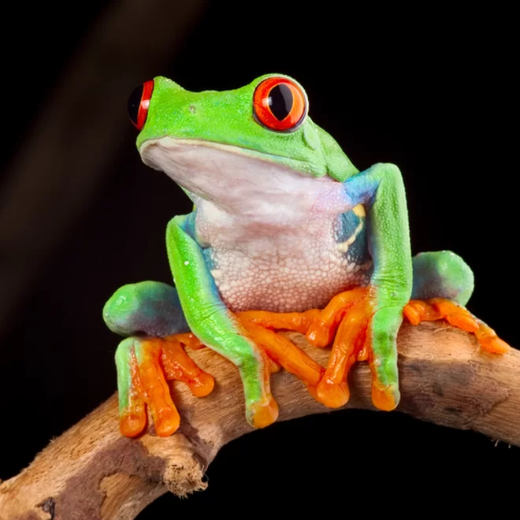

ברוכים הבאים לעולם המופלא של אבולוצית צפרדעי החלל.
האגדה מספרת ש-טריאדובטרצ'וס (אבותיהם של הצפרדעים והקרפדות.) נלקח על ידי מדען-חייזר שעסק בהנדסה גנטית בדומה ל - "ג'ומבה ג'וקיבה" מ - "לילו וסטיץ'".
המדען-חייזר יצר מספר שדרוגים כאשר המוקר שבהם הוא קפטן קררו גם לכם הארציים בגלל האנימה "קפטן קררו".
הניסוי המשמעותי ביותר הוא ללא ספק ניסוי "frog_a1".
"frog_a1" ניחן ביכולות יוצאות דופן של רביצה מול מסכים, התכונה המוזרה הקנתה לו כלים לחקור את עולם ההתכנות. אם נשמע לכם תמוהה כיצד "frog_a1" יכול לתמרן פעולות במחשב? זה פשוט המדען-חייזר יצר קסדת קלט שקוראת פעילות eeg ומיתרת את הצורך להשתמש בעכבר ומקלדת.
איך נראה הפלא ההנדסי? דומה לחלוטין לצפרדע הארצית "אילנית אדומת-עין".
